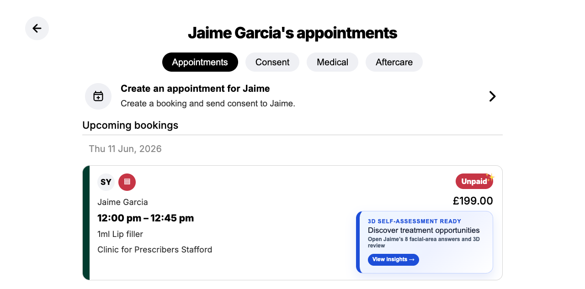

Elevating the consent form into the intelligent patient journey.
Helping clinics understand patients better. Helping patients make better decisions. Creating lifelong relationships.

Better understanding. Better conversations.
Patients create a personalized 3D preview from home, directly inside the familiar Faces consent flow.
Capture three guided photos.
Rank eight facial areas from favorite to least favorite.
Share area-specific concerns before the appointment.

Turning patient insights into personalized opportunities.
The clinic sees priorities and selected concerns alongside the 3D review.
Primary, complementary and combination treatments can be tied to what the patient already expressed.
Better planning, trust and higher revenue per patient.
From a single consultation to a lifelong relationship.
After treatment, Faces and Crisalix can continue engaging patients with education, progress, reminders and adaptive recommendations over time.
Education and guidance based on the patient’s assessment.
Follow-up assessments and visible milestones.
Reminders for products, memberships and treatment plans.
Recommendations evolve as the patient’s needs change.
